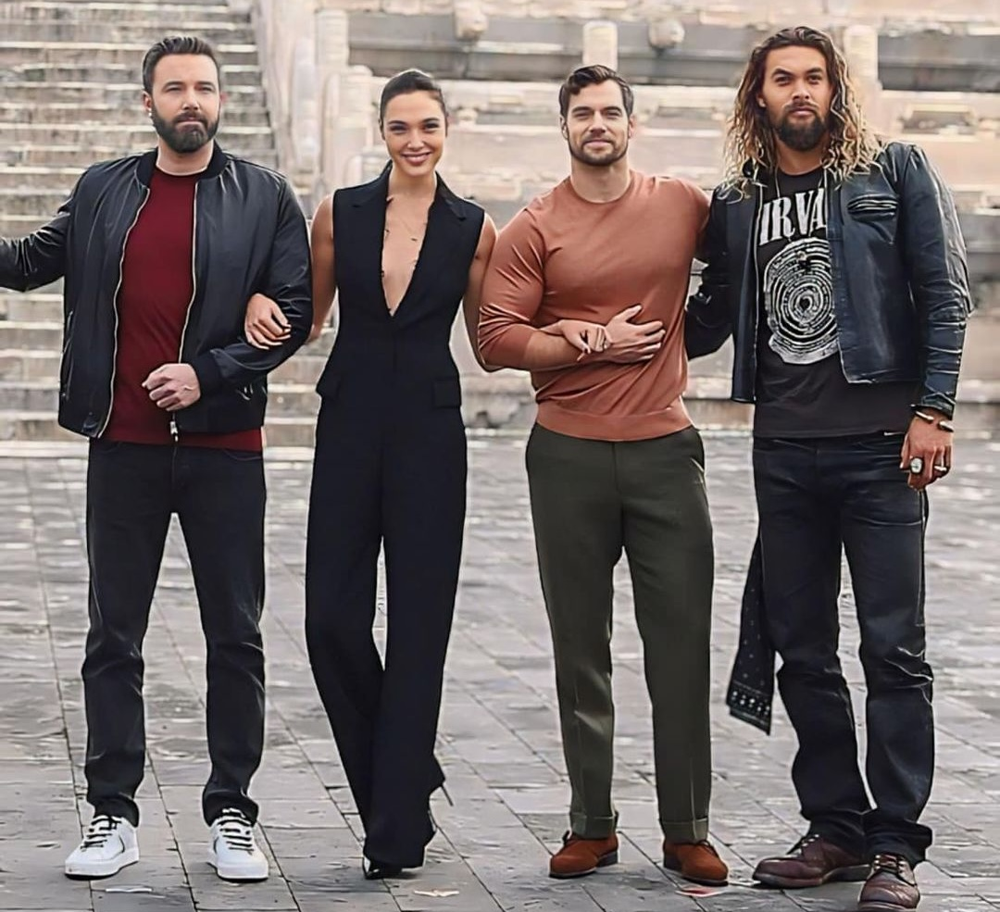
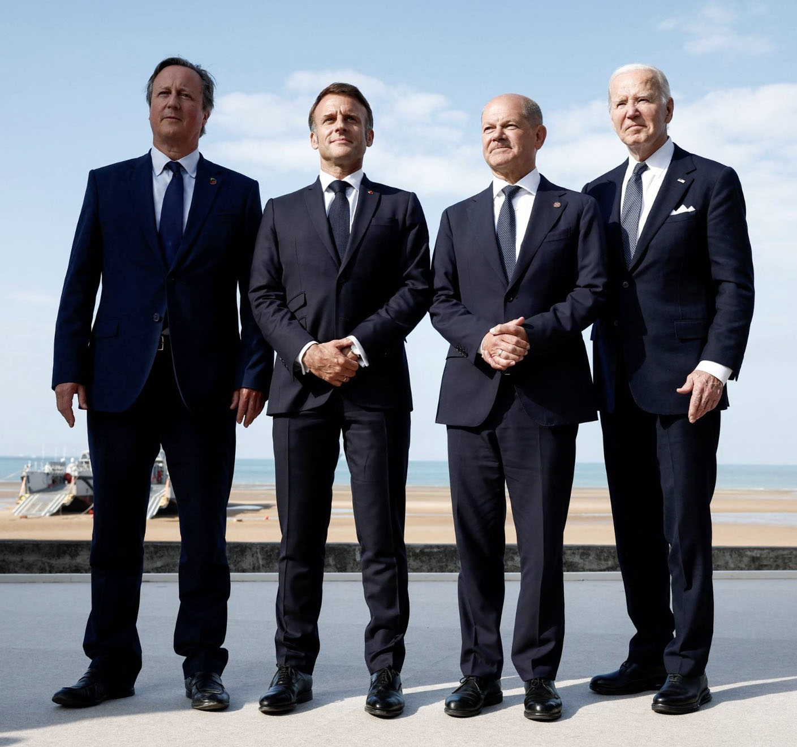
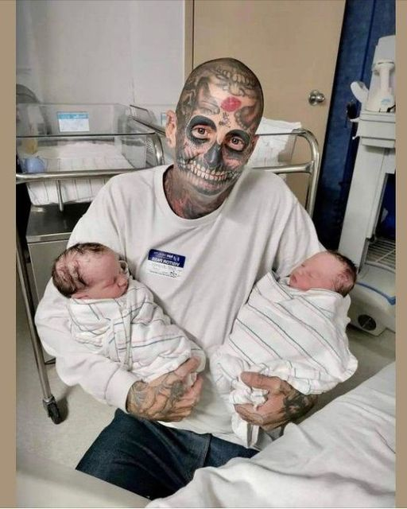
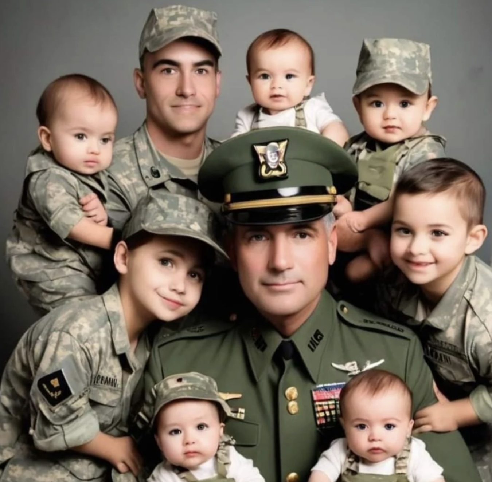
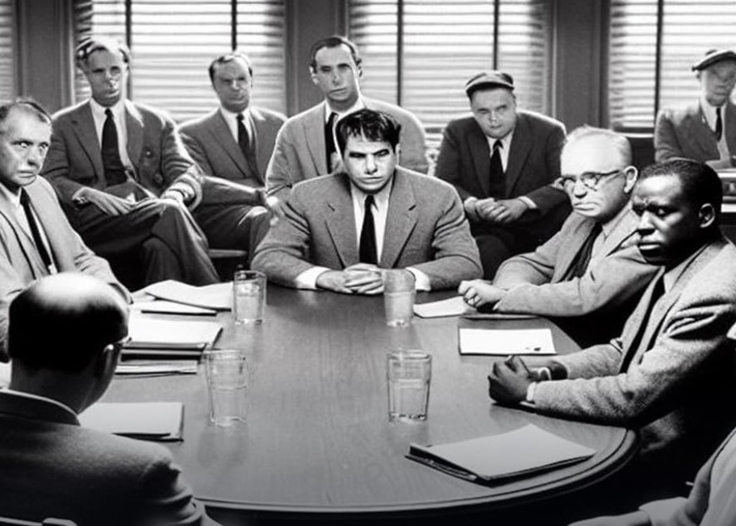
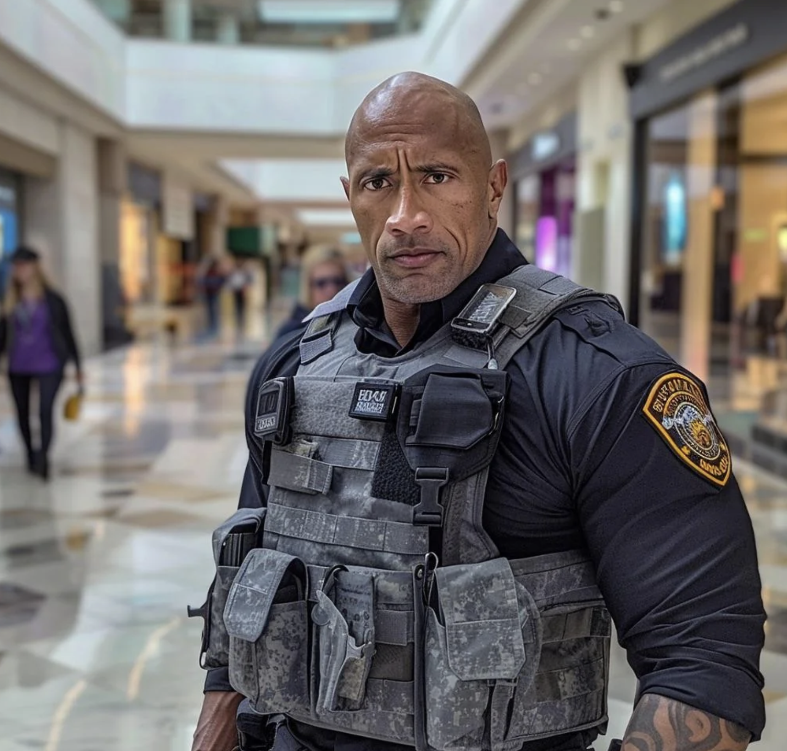
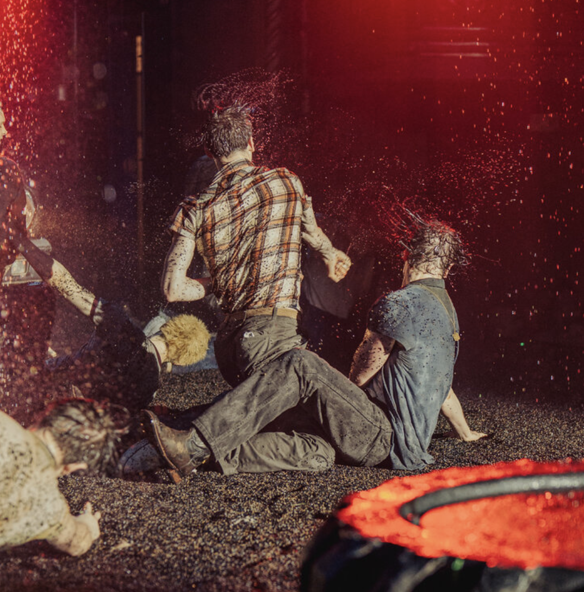

Fake Bilder Erkennen
Künstliche Intelligenz wird schnell besser. Können Sie erkennen, was jetzt echt ist? Werkzeuge der künstlichen Intelligenz können lebensechte Gesichter und realistische Fotos erstellen - und sie werden immer besser. Die gefälschten Bilder tauchen jetzt regelmäßig in den sozialen Medien auf, und viele Nutzer scheinen zu glauben, dass die Bilder echt sind. Es gibt jedoch einige verräterische Anzeichen dafür, dass ein Bild von einer künstlichen Intelligenz erstellt wurde. Können Sie den Unterschied erkennen? Machen Sie das QuizQuiz
Bild 1
Sie haben Recht! Dies ist ein echtes Bild. Dieses Bild zeigt einige Stars aus den "Justice League"-Filmen - Ben Affleck, Gal Gadot, Henry Cavill und Jason Momoa. Es ist ein echtes Bild, aber es sieht vielleicht etwas ungewöhnlich aus, weil es entweder beschnitten oder komprimiert wurde, nachdem es mehrmals in den sozialen Medien gepostet wurde.
Nein, dies ist ein echtes Bild. Dieses Bild zeigt einige Stars aus den "Justice League"-Filmen - Ben Affleck, Gal Gadot, Henry Cavill und Jason Momoa. Es ist ein echtes Bild, aber es sieht vielleicht etwas ungewöhnlich aus, weil es entweder beschnitten oder komprimiert wurde, nachdem es mehrmals in den sozialen Medien gepostet worden war. Das Originalbild finden Sie unten.
Bild 2
Dies ist ein von der KI generiertes Bild. Dieses Bild, das zwei Sängerinnen zeigt, ähnelt einem Werbebild einer Fernsehsendung. Aber es ist nicht echt. Viele KI-Bilder werden häufig auf Facebook-Seiten und anderswo geteilt, ohne dass angegeben wird, dass sie maschinell erzeugt wurden. Einige verräterische Anzeichen für KI-Fälschungen finden sich überall auf dem Bild: Das Mädchen hat nur vier sichtbare Finger, der rechte Arm der Frau scheint zu verschwinden, und die Menschen im Hintergrund scheinen mit den Instrumenten zu verschmelzen. KI-Bildgeneratoren haben immer noch Schwierigkeiten mit Details wie Fingern, aber sie werden immer besser.
Sie haben Recht! Dies ist ein von der KI generiertes Bild. Dieses Bild, das zwei Sängerinnen zeigt, ähnelt einem Werbebild einer Fernsehsendung. Aber es ist nicht echt. Viele KI-Bilder, darunter auch die in diesem Quiz, werden häufig auf Facebook-Seiten und anderswo geteilt, ohne dass angegeben wird, dass sie maschinell erzeugt wurden. Einige verräterische Anzeichen für KI-Fälschungen finden sich überall auf dem Bild: Das Mädchen hat nur vier sichtbare Finger, der rechte Arm der Frau scheint zu verschwinden, und die Menschen im Hintergrund scheinen mit den Instrumenten zu verschmelzen. KI-Bildgeneratoren haben immer noch Schwierigkeiten mit Details wie Fingern, aber sie werden immer besser.
Bild 3
Dies ist ein echtes Bild. Dieses Bild zeigt Regierungschefs auf dem G7-Gipfel. Politische Fehlinformationen sind eines der größten Risiken bei KI-Instrumenten. Datenschützer haben in diesem Jahr eine Reihe von KI-Fälschungen im Umlauf gesehen, darunter auch KI-Videos, die als "Deepfakes" bekannt sind. Aber das Problem schien in dieser Wahlsaison weniger ausgeprägt zu sein, als manche erwartet hatten. KI-Bildgeneratoren neigen dazu, Elemente in ihren Kreationen wiederholt zu verwenden, was ein mögliches Indiz dafür ist, dass sie nicht echt sind. In diesem Fall könnten die fast identischen Anzüge und Körperhaltungen den Anschein einer künstlichen Intelligenz erwecken.
Nein, dies ist ein echtes Bild. Dieses Bild zeigt Präsident Biden mit anderen Staats- und Regierungschefs auf dem G7-Gipfel in diesem Monat. Politische Fehlinformationen sind eines der größten Risiken bei KI-Instrumenten. Datenschützer haben in diesem Jahr eine Reihe von KI-Fälschungen im Umlauf gesehen, darunter auch KI-Videos, die als "Deepfakes" bekannt sind. Aber das Problem schien in dieser Wahlsaison weniger ausgeprägt zu sein, als manche erwartet hatten. KI-Bildgeneratoren neigen dazu, Elemente in ihren Kreationen wiederholt zu verwenden, was ein mögliches Indiz dafür ist, dass sie nicht echt sind. In diesem Fall könnten die fast identischen Anzüge und Körperhaltungen den Anschein einer künstlichen Intelligenz erwecken.
Bild 4
Dies ist ein KI-generiertes Bild. Dieses Bild könnte einem rustikalen Badezimmer ähneln, aber es wurde von der künstlichen Intelligenz erstellt. Viele Social-Media-Seiten teilen atemberaubende Architektur- und Innendesigns, ohne zu verraten, dass sie von KI-Tools erstellt wurden. Auch wenn sie auf den ersten Blick überzeugend wirken, gibt es meist verräterische Anzeichen dafür, dass sie gefälscht sind. Oft gibt es Designelemente, die sich jeder Logik entziehen. Hier erscheint der Duschkopf an einer Stelle, an der er unmöglich zu benutzen wäre. Komplexe Elemente im Hintergrund können verstümmelt und unsinnig sein, wie z. B. ein Wasserhahn in der Badewanne, der gleichzeitig als Telefon zu dienen scheint. Wie in anderen Bildern der künstlichen Intelligenz erscheint der Text im Kunstwerk verstümmelt.
Sie haben Recht! Dies ist ein KI-generiertes Bild. Dieses Bild könnte einem rustikalen Badezimmer ähneln, aber es wurde von der künstlichen Intelligenz erstellt. Viele Social-Media-Seiten teilen atemberaubende Architektur- und Innendesigns, ohne zu verraten, dass sie von KI-Tools erstellt wurden. Auch wenn sie auf den ersten Blick überzeugend wirken, gibt es meist verräterische Anzeichen dafür, dass sie gefälscht sind. Oft gibt es Designelemente, die sich jeder Logik entziehen. Hier erscheint der Duschkopf an einer Stelle, an der er unmöglich zu benutzen wäre. Komplexe Elemente im Hintergrund können verstümmelt und unsinnig sein, wie z. B. ein Wasserhahn in der Badewanne, der gleichzeitig als Telefon zu dienen scheint. Wie in anderen Bildern der künstlichen Intelligenz erscheint der Text im Kunstwerk verstümmelt.
Bild 5
Dies ist ein echtes Bild. Es zeigt Richard Huff, einen Kalifornier, der mehr als 240 Tätowierungen hat, mit seinen Zwillingsjungen.
Sie haben Recht! Dies ist ein KI-generiertes Bild. Dieses Bild könnte einem rustikalen Badezimmer ähneln, aber es wurde von der künstlichen Intelligenz erstellt. Viele Social-Media-Seiten teilen atemberaubende Architektur- und Innendesigns, ohne zu verraten, dass sie von KI-Tools erstellt wurden. Auch wenn sie auf den ersten Blick überzeugend wirken, gibt es meist verräterische Anzeichen dafür, dass sie gefälscht sind. Oft gibt es Designelemente, die sich jeder Logik entziehen. Hier erscheint der Duschkopf an einer Stelle, an der er unmöglich zu benutzen wäre. Komplexe Elemente im Hintergrund können verstümmelt und unsinnig sein, wie z. B. ein Wasserhahn in der Badewanne, der gleichzeitig als Telefon zu dienen scheint. Wie in anderen Bildern der künstlichen Intelligenz erscheint der Text im Kunstwerk verstümmelt.
Bild 6
Dies ist ein von der KI generiertes Bild. Es kursierte auf Facebook. Viele Kommentatoren schienen zu glauben, dass das Bild echt sei. Die Geschichte, die das Foto begleitete, suggerierte, dass es sich bei den Männern um ein Paar handelte, das Widrigkeiten überwunden hatte, um eine Familie zu gründen und in den Streitkräften aufzusteigen. Viele Facebook-Konten haben die Plattform mit KI-generierten Fotos überschwemmt.
Sie haben Recht! Dies ist ein von der KI generiertes Bild. Es kursierte auf Facebook. Viele Kommentatoren schienen zu glauben, dass das Bild echt sei. Die Geschichte, die das Foto begleitete, suggerierte, dass es sich bei den Männern um ein Paar handelte, das Widrigkeiten überwunden hatte, um eine Familie zu gründen und in den Streitkräften aufzusteigen. Viele Facebook-Konten haben die Plattform mit KI-generierten Fotos überschwemmt.
Bild 7
Dies ist ein von der KI generiertes Bild. Es wurde für "12 Angry Men", den preisgekrönten Film von 1957, erstellt. Es erschien auf Freevee, einem kostenlosen Streaming-Dienst im Besitz von Amazon, so Andy Kelly, ein Journalist, der das Bild auf X teilte. Viele der Gesichter sehen sehr ungewöhnlich aus, mit verstümmelten Nasen und falsch ausgerichteten Augen. Diese Fehler traten bei älteren KI-Bildgeneratoren häufiger auf, während neuere Tools rasche Verbesserungen erzielt haben.
Sie haben Recht! Dies ist ein von der KI generiertes Bild. Es wurde für "12 Angry Men", den preisgekrönten Film von 1957, erstellt. Es erschien auf Freevee, einem kostenlosen Streaming-Dienst, der zu Amazon gehört, so Andy Kelly, ein Journalist, der das Bild auf X teilte. Amazon reagierte nicht auf Anfragen nach einem Kommentar. Viele der Gesichter sehen sehr ungewöhnlich aus, mit verstümmelten Nasen und falsch ausgerichteten Augen. Diese Fehler traten bei älteren KI-Bildgeneratoren häufiger auf, während neuere Tools rasche Verbesserungen erzielt haben.
Bild 8
Es scheint Dwayne (The Rock) Johnson in einem Einkaufszentrum zu zeigen. Aber es wurde von Bobby Griffin erstellt, einem 28-jährigen Künstler aus Kalifornien. Er benutzte Midjourney, eine Firma für künstliche Intelligenz, die lebensechte Bilder erstellen kann. Das Unternehmen ist in die Kritik geraten, weil es offenbar urheberrechtlich geschütztes Material zum Trainieren seiner KI-Tools verwendet und es den Nutzern ermöglicht, Bilder von Berühmtheiten, Politikern und anderem geistigen Eigentum zu erstellen. Auf diesem Bild ist das Abzeichen zu erkennen, das einen verstümmelten Text enthält. Viele KI-Systeme haben immer noch Schwierigkeiten, echten Text zu erstellen, aber sie werden immer besser. Dieses Bild war Teil einer Serie von Mr. Griffin, die Prominente in alltäglichen Berufen zeigt.
Sie haben Recht! Dies ist ein von der KI generiertes Bild. Es scheint Dwayne (The Rock) Johnson in einem Einkaufszentrum zu zeigen. Aber es wurde von Bobby Griffin erstellt, einem 28-jährigen Künstler aus Kalifornien, der online als GremlinBobby bekannt ist. Er benutzte Midjourney, eine Firma für künstliche Intelligenz, die in der Lage ist, lebensechte Bilder zu erstellen. Das Unternehmen ist in die Kritik geraten, weil es offenbar urheberrechtlich geschütztes Material zum Trainieren seiner KI-Tools verwendet und es den Nutzern ermöglicht, Bilder von Berühmtheiten, Politikern und anderem geistigen Eigentum zu erstellen. Auf diesem Bild ist das Abzeichen zu erkennen, das einen verstümmelten Text enthält. Viele KI-Systeme haben immer noch Schwierigkeiten, echten Text zu erstellen, aber sie werden immer besser. Dieses Bild war Teil einer Serie von Mr. Griffin, die Prominente in alltäglichen Berufen zeigt.
Bild 9
Richtig! Dies ist ein echtes Bild. Es zeigt Darsteller in "The Outsiders", einem Broadway-Stück mit einer choreografierten Kampfszene inmitten von Regenfällen. Die künstliche Intelligenz hat sich bei der Erstellung von ungewöhnlichen oder weltfremden Bildern wie diesem hervorgetan und den Konten in den sozialen Medien ein neues Werkzeug an die Hand gegeben, um Engagement und Klicks zu fördern.
Ups, nicht ganz. Dies ist ein echtes Bild. Es zeigt Darsteller in "The Outsiders", einem Broadway-Stück mit einer choreografierten Kampfszene inmitten von Regenfällen. Die künstliche Intelligenz hat sich bei der Erstellung ungewöhnlicher oder weltfremder Bilder wie diesem hervorgetan und den Konten in den sozialen Medien ein neues Werkzeug an die Hand gegeben, um das Engagement und die Klicks zu steigern.
Bild 10
Nein, dies ist ein von der KI generiertes Bild. Sensity, ein Unternehmen, das Deepfakes aufspürt, fand dieses Bild in einer Sammlung ähnlicher Fälschungen, die im Internet kursieren und von denen viele Präsident Biden oder den ehemaligen Präsidenten Donald J. Trump in einer Vielzahl von glaubwürdigen, aber unwahrscheinlichen Situationen zeigen. Obwohl die Ähnlichkeit mit Präsident Biden frappierend ist, würde er als Zivilist keine militärische Uniform tragen.
Sie haben Recht! Dies ist ein von der künstlichen Intelligenz generiertes Bild. Sensity, ein Unternehmen, das Deepfakes aufspürt, fand dieses Bild in einer Sammlung ähnlicher Fälschungen, die im Internet kursieren und von denen viele Präsident Biden oder den ehemaligen Präsidenten Donald J. Trump in einer Vielzahl von glaubwürdigen, aber unwahrscheinlichen Situationen zeigen. Obwohl die Ähnlichkeit mit Präsident Biden frappierend ist, würde er als Zivilist keine militärische Uniform tragen.